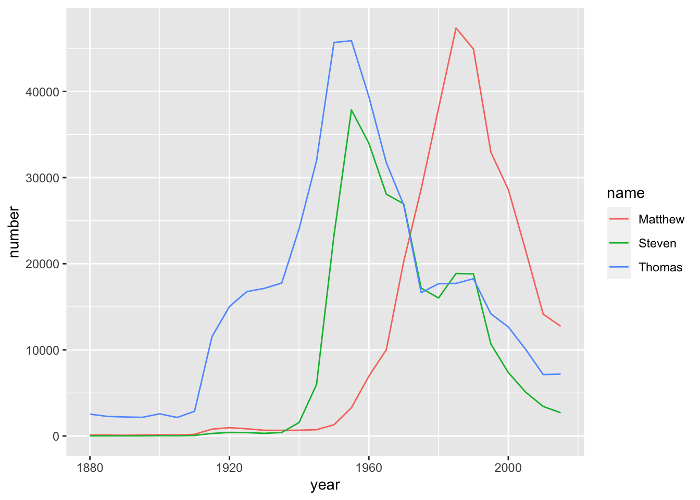

7 Data Manipulation with dplyr
https://learn.datacamp.com/courses/data-manipulation-with-dplyr
7.1 Transforming Data with dplyr
select(), mutate(), filter(), and arrange()
For more details, go to the Data Wrangling section of Intro to the Tidyverse.
7.2 Aggregating Data
count()
A simple way to aggregate data is to count to find out the number of observations. Use count():
mtcars %>%
count(cyl, wt = hp, sort = TRUE)## cyl n
## 1 8 2929
## 2 4 909
## 3 6 856Here, count() sorted out the distinct observations from the cyl variable, the wt (weight) would count the total number of hp (horse power) for each distinct cyl instead of counting the total number of of observations that belongs to each distinct vyl.
The wt argument basically plug in another column to count instea.
group_by() And summarize()
For more details, go to the Grouping and summarizing section of Intro to the Tidyverse.
top_n()
This function select the most extreme observations. The number 1 here select the highest hp in each distinct cyl observations:
mtcars %>%
select(cyl, hp) %>%
mutate(cyl = as.factor(cyl)) %>%
group_by(cyl) %>%
top_n(1, hp)## # A tibble: 3 × 2
## # Groups: cyl [3]
## cyl hp
## <fct> <dbl>
## 1 4 113
## 2 6 175
## 3 8 335For more details, go to the Introduction to Factor Variables section of Categorical Data in the Tidyverse.
7.3 Selecting and Transforming Data
select() And rename()*
For more details, go to the Tame your data section of Working with Data in the Tidyverse.
Transmute()
The function transmute() is like a combination of select and mutate. It only outputs the selected variables, and allow changing, creating new variables inside the same bracket:
mtcars[1:5,] %>%
transmute(weight_lbs = wt, weight_kg = weight_lbs / 2.205)## weight_lbs weight_kg
## Mazda RX4 2.620 1.188209
## Mazda RX4 Wag 2.875 1.303855
## Datsun 710 2.320 1.052154
## Hornet 4 Drive 3.215 1.458050
## Hornet Sportabout 3.440 1.5600917.4 Case Study: The babynames Dataset
babynames <- readRDS(gzcon(url("https://assets.datacamp.com/production/repositories/4984/datasets/a924ac5d86adba2e934d489cb9db446236f62b2c/babynames.rds")))
babynames## # A tibble: 332,595 × 3
## year name number
## <dbl> <chr> <int>
## 1 1880 Aaron 102
## 2 1880 Ab 5
## 3 1880 Abbie 71
## 4 1880 Abbott 5
## 5 1880 Abby 6
## 6 1880 Abe 50
## 7 1880 Abel 9
## 8 1880 Abigail 12
## 9 1880 Abner 27
## 10 1880 Abraham 81
## # … with 332,585 more rowsFiltering and arranging for one year
Filter for only the year 1990 and sort the table in descending order of the number of babies born:
babynames %>%
# Filter for the year 1990
filter(year == 1990) %>%
# Sort the number column in descending order
arrange(desc(number))## # A tibble: 21,223 × 3
## year name number
## <dbl> <chr> <int>
## 1 1990 Michael 65560
## 2 1990 Christopher 52520
## 3 1990 Jessica 46615
## 4 1990 Ashley 45797
## 5 1990 Matthew 44925
## 6 1990 Joshua 43382
## 7 1990 Brittany 36650
## 8 1990 Amanda 34504
## 9 1990 Daniel 33963
## 10 1990 David 33862
## # … with 21,213 more rowsUsing top_n with babynames
filter() and arrange() were used to find the most common names in one year. However, group_by() and top_n() can be used to find the most common name in every year:
babynames %>%
group_by(year) %>%
top_n(1, number)## # A tibble: 28 × 3
## # Groups: year [28]
## year name number
## <dbl> <chr> <int>
## 1 1880 John 9701
## 2 1885 Mary 9166
## 3 1890 Mary 12113
## 4 1895 Mary 13493
## 5 1900 Mary 16781
## 6 1905 Mary 16135
## 7 1910 Mary 22947
## 8 1915 Mary 58346
## 9 1920 Mary 71175
## 10 1925 Mary 70857
## # … with 18 more rowsVisualizing names with ggplot2
Filter for only the names Steven, Thomas, and Matthew, and assign it to an object called selected_names.
The %in% operator can be used within filter() by including c() and a vector of values.
selected_names <- babynames %>%
filter(name %in% c("Steven", "Thomas", "Matthew"))Visualize the three names as a line plot over time, with each name represented by a different color:
# Filter for the names Steven, Thomas, and Matthew
selected_names <- babynames %>%
filter(name %in% c("Steven", "Thomas", "Matthew"))
# Plot the names using a different color for each name
ggplot(selected_names, aes(x = year, y = number, color = name)) +
geom_line()
Finding the year each name is most common
Calculate the total number of people born in that year as year_total. Next, use year_total to calculate the fraction of people born in each year that have each name.
Then, use the fraction column, in combination with top_n(), to identify the year each name is most common:
babynames_fraction <- babynames %>%
group_by(year) %>%
mutate(year_total = sum(number)) %>%
ungroup() %>%
mutate(fraction = number / year_total)
# Find the year each name is most common
babynames_fraction %>%
group_by(name) %>%
top_n(1, fraction)## # A tibble: 48,040 × 5
## # Groups: name [48,040]
## year name number year_total fraction
## <dbl> <chr> <int> <int> <dbl>
## 1 1880 Abbott 5 201478 0.0000248
## 2 1880 Abe 50 201478 0.000248
## 3 1880 Abner 27 201478 0.000134
## 4 1880 Adelbert 28 201478 0.000139
## 5 1880 Adella 26 201478 0.000129
## 6 1880 Adolf 6 201478 0.0000298
## 7 1880 Adolph 93 201478 0.000462
## 8 1880 Agustus 5 201478 0.0000248
## 9 1880 Albert 1493 201478 0.00741
## 10 1880 Albertina 7 201478 0.0000347
## # … with 48,030 more rowslag() Function
The lag() function can be used to find the differences between two vectors by shifting the vectors to the right:
v <- c(1, 3, 6, 14)
v## [1] 1 3 6 14lag(v)## [1] NA 1 3 6Changes in popularity of a name
To find the changes in popularity of the name "Matthew" over the years, we will minus the fraction by the lag of the fraction to calculate the difference between each year. The difference represents the up or down of the fraction, which means the popularity increasing or decreasing:
babynames_fraction %>%
filter(name == "Matthew") %>%
arrange(year) %>%
mutate(difference = fraction - lag(fraction)) %>%
arrange(desc(difference))## # A tibble: 28 × 6
## year name number year_total fraction difference
## <dbl> <chr> <int> <int> <dbl> <dbl>
## 1 1975 Matthew 28665 3014943 0.00951 0.00389
## 2 1970 Matthew 20265 3604252 0.00562 0.00286
## 3 1985 Matthew 47367 3563364 0.0133 0.00223
## 4 1980 Matthew 38054 3439117 0.0111 0.00156
## 5 1965 Matthew 10015 3624610 0.00276 0.00109
## 6 1960 Matthew 6942 4152075 0.00167 0.000853
## 7 1955 Matthew 3287 4012691 0.000819 0.000447
## 8 1915 Matthew 798 1830351 0.000436 0.000102
## 9 1950 Matthew 1303 3502592 0.000372 0.0000967
## 10 1910 Matthew 197 590607 0.000334 0.0000811
## # … with 18 more rows